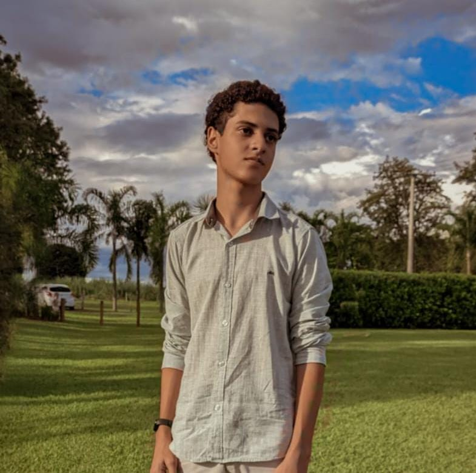
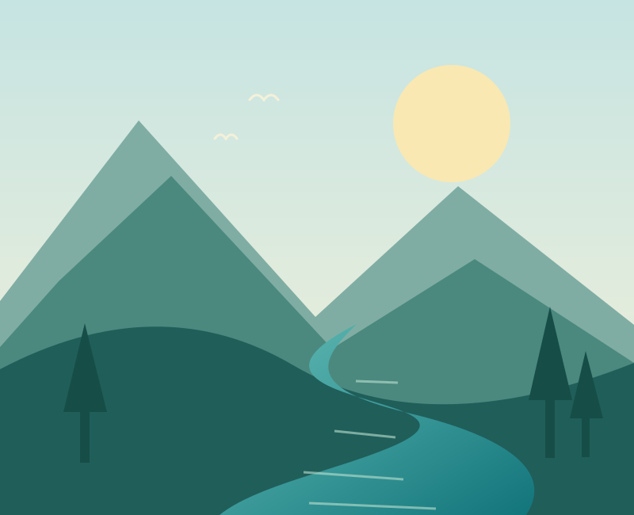
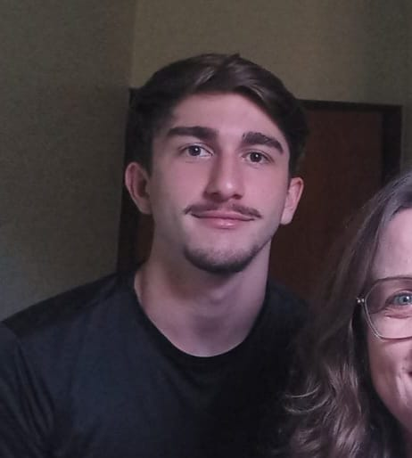
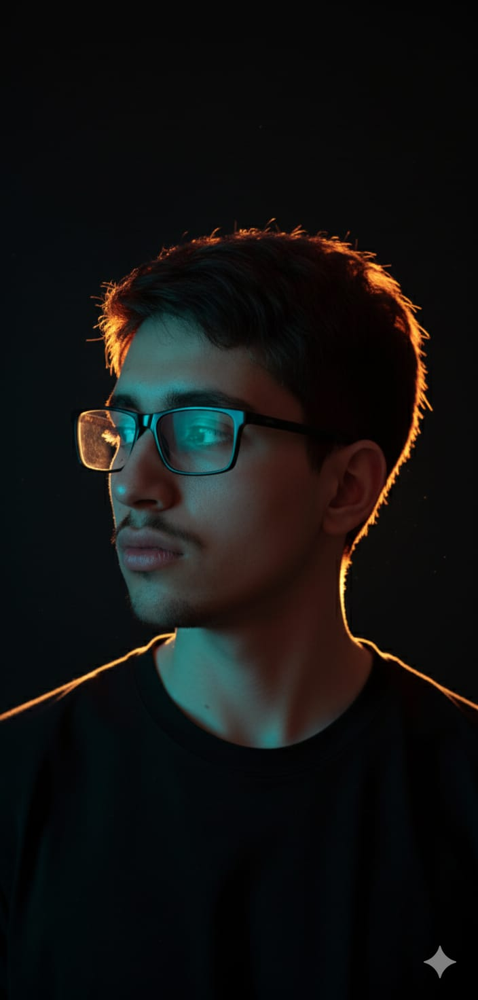

Equipe Aqua Alert
Tecnologia com propósito
Somos estudantes unidos por uma ideia: tornar o consumo de água mais visível, mais compreensível e mais consciente.
Nossa história
Quanto de água usamos sem perceber? O Aqua Alert nasceu da vontade de responder a essa pergunta unindo tecnologia e sustentabilidade.
Queremos aproximar os dados da rotina. Porque conhecer o próprio consumo ajuda a identificar mudanças e a escolher por onde começar.
Conheça quem está por trás
Da medição à consciência
O sensor mede a passagem de água. O dispositivo envia as leituras, e o painel organiza o consumo para você acompanhar.
Um sensor de vazão registra a passagem de água.
O dispositivo transmite os dados para a aplicação.
O painel apresenta o consumo diário, semanal e o histórico.



Cuidar dos recursos que fazem parte da nossa vida.
Aproximar tecnologia e escolhas mais conscientes.
Transformar informação em novos hábitos.
Pensar no impacto de cada escolha, hoje e amanhã.
Nossa missão
Ajudar pessoas e famílias a compreender seu consumo e a adotar hábitos que reduzam o desperdício de água.
Nossa visão
Construir soluções acessíveis de monitoramento que incentivem uma relação mais responsável com os recursos naturais.